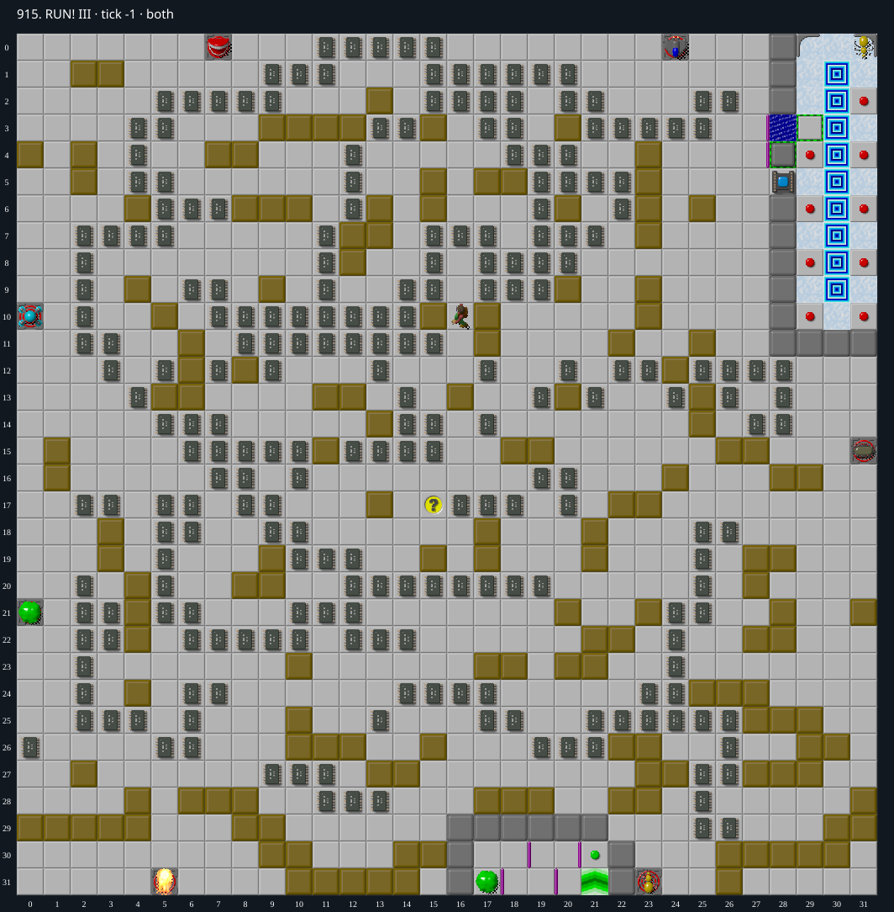

Jacques · Original Tile World MS
915. RUN! III
Impossibility argumentTen chips are permanently buried under frozen blocks; at most 384 of the required 385 can be collected.
385 chips required · 999 second time limit
Why completion is impossible
- There are 394 chips across both layers and 385 are required. Ten chips lie beneath three immovable groups of ordinary blocks: (17,28)–(19,28), (31,28)–(31,29), and (10,31)–(14,31).
- The first three-block row is backed by permanent walls immediately south. The other two groups sit against the east or south board edge. Perpendicular pushes require standing in a wall or outside the board, or would push into that barrier. Parallel pushes cannot start because each endpoint requires standing on the adjacent block, and blocks cannot push another block. None of these groups can make a first move.
- No hazard or forced floor lies under these ten blocks; monsters do not push blocks. The level has no teleporters. Other block movement and cloning therefore cannot free these chips. Even granting collection of every other chip, only 394 − 10 = 384 can be collected.
- Every Exit is in the room east of column 28, rows 0–10. Its only usable entrance from outside is the socket at (28,5). The apparent alternative openings at (28,3) and (28,4) are shielded on their west sides by east-facing thin walls at (27,3) and (27,4); the remaining boundary is permanent walls or the board edge. Opening the toggle wall does not remove those thin walls.
- The socket requires all 385 chips, but at most 384 are collectible. Hence Chip can never enter the exit room.
Inspect both layers
The main map shows the initial runtime state. Switch to the buried layer to inspect hidden terrain and items. Hover coordinates are also available in the downloadable SVG.

